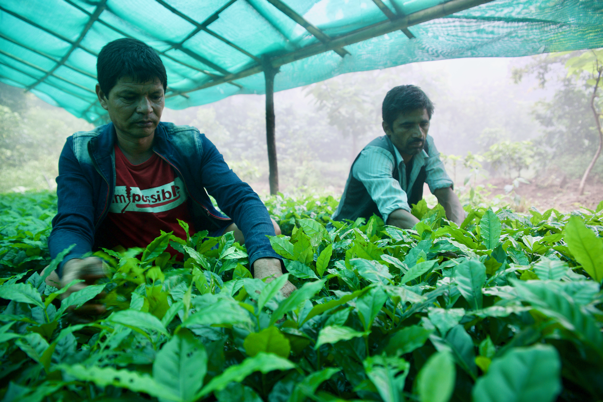

About Us
" The steps and methods we take to prepare our coffee helps develop a deep body and tones of dried fruit and spice in the cup."
Family Owned since 2007, Nuwa Estate specialise in producing and exporting high-grade speciality coffee. Our current agricultural methods, standards and commitment to quality has allowed us to develop products that benefit from a wealth of knowledge and expertise.
At first we were solely into yielding and peddling raw coffee, but in time we realized that in Nepal the consumers had become weary of the commercial coffee enterprises and stale, overly roasted beans, which then enticed us to open a roaster for people who were clamoring for the actual taste of fresh coffee. We try our level best to only sell fresh coffee to our buyers, so they may enjoy coffee at peak flavor. We only use the finest, most delicious, and responsibly sourced beans. We are united by the simple purpose of getting great coffee to everyone who asks for it.

About The Estate
Before our inception as a company on our current estate, in the area there were no roads for vehicles to travel on, the infrastructure was very backward and barely visible and there were only dirt tracks to walk on. At a quick glance no one could have imagined that a wholly integrated and functional coffee production estate could be founded in such a derelict location. Nonetheless it is now a reality.
The high elevation in Nuwakot region contributes to the intense aromatic characteristics of the coffee and the minerals enriched soil provides the support and nourishment required by coffee plants. It comprises of several microclimates, different altitudes and topographies, all enabling the production of exceptional coffee.

Nestled in the lush and verdant Nuwakot hills in Northern Nepal, Nuwa Estate boasts of fruit orchards, plentiful rainfall, salubrious temperatures and a variety of spices. This results in a superior coffee that is a testament to the fertile land of its origin. Our beans carry with it stories of the land and people who have cultivated it for over a decade.
Nuwa Estate is located on the gradient hills North-East of Nepal in the district of Nuwakot. Stretching over 25 Hectares at an altitude of 4,500 – 5,000 ft above sea level. As a direct result of the altitude there is less oxygen, which then slows the growth of the coffee plants. Slow growth gives the beans a more concentrated and complex flavor.